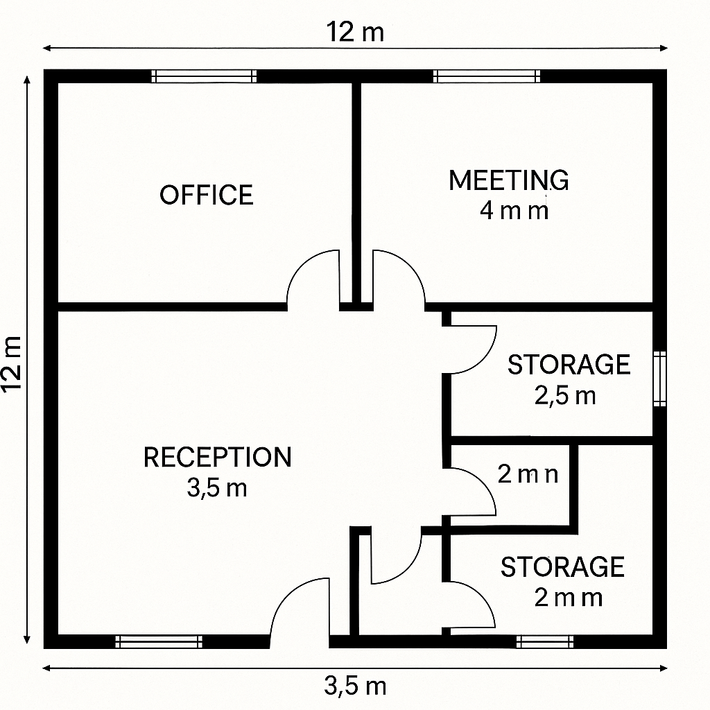

Descargar estos apuntes
Duración: 35 horas
Modalidad: Trabajo en grupos de 3 alumnos
Producto final: Proyecto técnico documentado y presentación grupal
Índice
Objetivo general
Diseñar y documentar la implantación completa de una infraestructura informática para una pequeña empresa, integrando conocimientos técnicos adquiridos durante el ciclo formativo, y considerando criterios de funcionalidad, sostenibilidad, prevención de riesgos, viabilidad económica y calidad.
Escenario inicial
TechPyme SL
La empresa TechPyme SL, con 10 trabajadores distribuidos en varias áreas (administración, contabilidad, almacén, dirección y sala de reuniones), necesita una solución completa de infraestructura TIC: red, equipos, servicios, usuarios, seguridad, sostenibilidad y mantenimiento.

Material entregado:
- Plano en PDF con distribución de espacios
- Descripción de perfiles y puestos
- Requisitos TIC mínimos
Fases del proyecto
Fase 1: Análisis y propuesta (6 h)
Objetivo: Estudiar el escenario y definir una propuesta técnica inicial.
"Question markdown"
Entrevistador/a: Buenos días. ¿Podría contarnos un poco más sobre TechPyme SL y lo que necesita?
Dueño de la empresa (Sr. Martín): Por supuesto. TechPyme es una consultora técnica que empieza su actividad en un local de unos 150 m². Seremos 10 personas y queremos montar toda la infraestructura informática desde cero.
Entrevistador/a: ¿Cómo se distribuye el personal?
Sr. Martín: Tendremos:
- 4 personas en administración y contabilidad.
- 3 técnicos de soporte y desarrollo.
- 1 responsable de atención al cliente.
- 1 persona en diseño y soporte interno.
- 1 persona en dirección.
El local está organizado en una oficina principal (6 puestos), despacho de dirección, una sala de reuniones, un pequeño almacén y zona de recepción.
Entrevistador/a: ¿Qué servicios o funciones espera que cubra el sistema informático?
Sr. Martín:
Queremos que el servidor centralice lo siguiente:
- Servidor de dominio: gestión de usuarios y contraseñas.
- Servidor de archivos: carpetas compartidas con permisos por usuario o grupo.
- Servidor de impresoras: una impresora en red para todos.
- Servidor web interno: para alojar documentación y recursos internos con un CMS ligero.
- Servidor FTP/SFTP: para intercambio de archivos grandes.
- Servidor de correo electrónico: al menos a nivel interno o con reenvío externo.
- Acceso remoto: que dirección pueda conectarse de forma segura desde fuera.
- Backups automáticos: mínimo diarios, con almacenamiento local y externo si es posible.
- Sistema de monitorización básico: saber si algo falla (espacio, red, etc.).
Entrevistador/a: ¿Qué tipo de equipos y conectividad esperáis?
Sr. Martín:
- Todos los equipos de oficina deben ir conectados por cable para asegurar estabilidad.
- La sala de reuniones necesita solo Wi-Fi y una pantalla para presentaciones.
- Los técnicos usarán ordenadores de mayor rendimiento y disco.
- Dirección necesita acceso remoto seguro y prioridad de acceso a los recursos.
Entrevistador/a: ¿Algún criterio especial que debamos tener en cuenta?
Sr. Martín:
- Queremos usar preferentemente software libre o gratuito, siempre que sea seguro.
- Se valorará todo lo que tenga que ver con la eficiencia energética y sostenibilidad.
- La documentación técnica debe estar bien hecha.
- El mantenimiento debe ser sencillo, y si hay algo que podamos autogestionar, mejor.
Entrevistador/a: ¿Qué presupuesto hay disponible?
Sr. Martín: Contamos con un máximo de 3.000 euros para la instalación completa. Si la solución es sólida y hay justificación técnica, podríamos estirarlo un poco, pero preferimos no hacerlo.
Entrevistador/a: Gracias. Con esta información ya tenemos una buena base para preparar la propuesta.
Tareas:
-
Analisis de la entrevista inicial
A partir de esta entrevista, elabora
- Una lista detallada de requisitos funcionales (qué debe ofrecer el sistema).
- Una lista de servicios que debe implementar el servidor.
- Un boceto inicial de red, con puestos, conexiones y servidor.
- Un presupuesto técnico justificado, ajustado a un máximo de 3.000 €.
- La clasificación de usuarios por roles y necesidades específicas.
-
Análisis del plano del local:
- Identificar áreas de trabajo.
- Determinar número de puestos de red y ubicación de equipos.
- Ubicar el armario de comunicaciones (rack).
-
Estudio de necesidades TIC de la empresa:
- Roles y funciones de los usuarios.
- Requisitos de conectividad, seguridad, servicios, movilidad.
-
Propuesta de solución:
- Número de equipos, periféricos y servidores necesarios.
- Servicios que se implantarán (correo, web, FTP, DHCP, DNS...).
- Primer boceto de topología de red.
-
Selección inicial de componentes:
- Hardware principal (PCs, impresoras, switches, routers...).
- Justificación técnica y económica básica.
Fase 2: Diseño y planificación (8 h)
Objetivo: Elaborar el diseño técnico detallado del sistema y planificar su ejecución.
Tareas:
-
Plano de red física y lógica:
- Esquema de cableado estructurado.
- Ubicación de tomas, patch panel, switch, puntos de acceso Wi-Fi.
- Direccionamiento IP (estático/dinámico).
-
Configuración de sistemas operativos y servicios:
- Monopuesto: sistema operativo base, instalación básica.
- Red: servidor de dominio, servicios instalados.
- Usuarios y grupos definidos.
-
Política de seguridad y copias de seguridad:
- Antivirus, firewall, contraseñas, cifrado, control de accesos.
- Backups: frecuencia, tipo, herramienta empleada.
-
Medidas de sostenibilidad y alineación con ODS:
- Consumo energético, reciclaje de equipos, virtualización.
- Propuesta de economía circular aplicada al proyecto.
-
Cronograma de ejecución y presupuesto:
- Plan de tareas por días/semanas.
- Cálculo de costes de materiales, licencias, mantenimiento.
Fase 3: Instalación virtual (8 h)
Objetivo: Simular o documentar la ejecución técnica del proyecto.
Tareas:
-
Simulación del montaje de red:
- Capturas de Packet Tracer, GNS3 u otro simulador.
- Esquema funcional y pruebas de conectividad.
-
Instalación de sistemas operativos:
- Capturas del proceso de instalación/configuración.
- Ajustes de red, usuarios, permisos.
-
Instalación de servicios de red:
- Configuración de DNS, DHCP, servidor web, FTP, impresoras.
- Capturas y scripts de configuración.
-
Documentación técnica de instalación:
- Procedimientos paso a paso.
- Justificación de decisiones técnicas.
Fase 4: Evaluación y seguimiento (6 h)
Objetivo: Verificar la viabilidad y calidad del sistema propuesto.
Tareas:
Fase 5: Presentación final (7 h)
Objetivo: Comunicar y defender el proyecto con claridad técnica y profesional.
Tareas:
Entrega
- Memoria técnica completa del proyecto
- Presentación visual final (10-15 minutos)
- Diario de grupo / bitácora
- Autoevaluación y coevaluación grupal
- Evidencias técnicas (scripts, capturas, esquemas, etc.)
Evaluación
Se utilizarán rúbricas específicas por fase y para la presentación. Se valorará:
- Calidad técnica y coherencia del proyecto
- Presentación oral y escrita
- Organización del grupo y participación
- Realismo, sostenibilidad e innovación
- Aplicación transversal de conocimientos del ciclo
Recomendaciones
- Repartid funciones claras desde el inicio
- Documentad todo con capturas, esquemas y notas
- Planificad bien el tiempo y usad herramientas de colaboración
- Relacionad vuestro proyecto con los ODS siempre que podáis
- Consultad normativa, recursos y al profesorado cuando lo necesitéis
Recursos y apoyos
- Simuladores: Packet Tracer, VirtualBox, Draw.io.
- Documentación técnica oficial.
- Normativas: LOPD, prevención de riesgos, sostenibilidad, etc.
- Repositorios de software libre y páginas de fabricantes (Ubuntu, Debian, Apache, Mozilla, etc.).